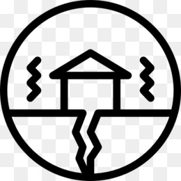

Terremotos "sismos"
Los terremotos, son movimientos violentos de la tierra, causada por el repentino choque o rose de las placas tectonicas, generalmente se mide su magnitug en escalas, (Richter,Mercali).
Peligros
Por lo general los sismos o terremostos no generan daño, lo que genera realmente peligro son las infraestructuras que construyen las personas, casas, iglesias, etc.A demas un gran peligros y por lo cual genera muchas muertes es la poca preparacion de las personas ante estos sucesos.
Precausiones
Las precausiones mas recomendadas es participar en los simulacros, tener una mochila de emergenciqas y tener un sitio en casa donde evacuar.
Historia en el Peru
El Peru a experimentado grandes sismos en toda su historia, por ejemplo el mas reciente es del 2007, que causo mas de 500 muertos y muchos afectados, luego esta el sismo mas grande de toda la historia peruana, ocurrido en la epoca virreinal con una magnitud de 9, debasto todo la ciudad de lima y causo un gran tsunami.
| Fecha | Magnitud | Localización | Daños |
|---|---|---|---|
| 2007-08-15 | 8.0 | Ica | 500 muertos, 1.500 heridos |
| 1746-08-28 | 9.0 | Lima | Devastacion total de toda la ciudad |
| 1687-01-20 | 8.0 | Arequipa | Gran daño en todo Arequipa |